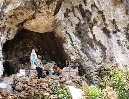

Goa Maria
Kebanyakan orang mungkin hanya mengetahui Patung Yesus saja yang berada di Bukit Buntu Burake ini, padahal masih ada satu tempat penting lagi yang letaknya masih satu kawasan dengan Patung Yesus ini yaitu Goa Maria. Patung Ibunda Yesus yang diletakkan di dalam goa ini juga bisa menjadi salah satu tujuan wisata religi buat kalian yang beragama Katolik. Ukurannya memang tidak se-spektakuler Patung Yesus, ukurannya normal seperti rata-rata Goa Maria pada umumnya. Namun ukuran tersebut tidaklah menjadi tolak ukur kekhusyukkan bagi kalian yang ingin berdoa di tempat ini.Apabila voyagers kebingungan untuk menuju tempat ini, kalian bisa bertanya pada anak kecil di sekitar parkiran yang menjaga kendaraan yang terparkir. Mereka akan menunjukkan arah menuju Goa Maria ini.